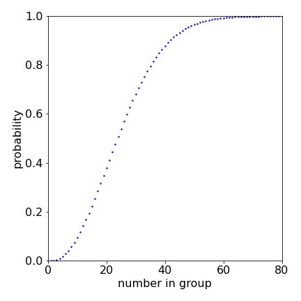
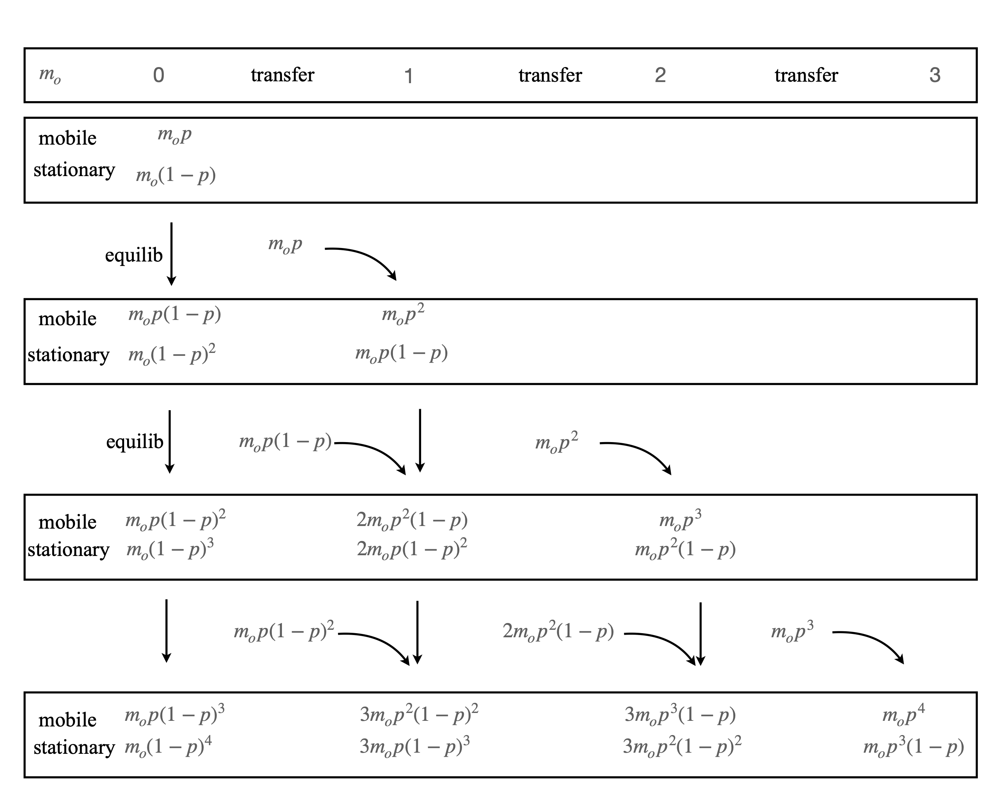
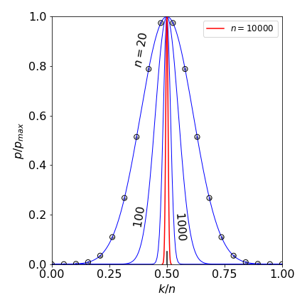
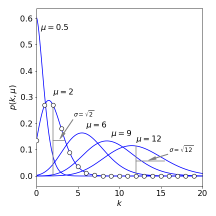
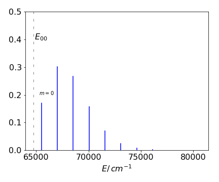
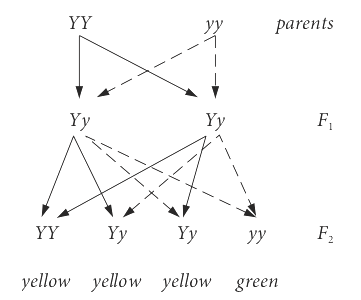
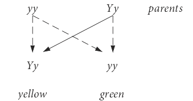

9 Sophisticated Counting.
Contents
9 Sophisticated Counting.#
%matplotlib inline
import numpy as np
import matplotlib.pyplot as plt
from sympy import *
9.1 Permutations, Combinations and Probability.#
The branch of mathematics dealing with permutations, combinations, and probability is perhaps that most closely related to everyday experience, particularly so if you play cards or do the lottery. There are different ways of counting the number of the arrangements of objects, such as molecules or footballs and these are permutations and combinations.
Permutations#
Permutations count the number of ways of arranging objects so that each permutation is unique. This means that the order is important.
Combinations#
Combinations count the number of ways of selecting objects from a group without considering the order of selecting.
We shall describe these quantities in terms of ‘objects’ and ‘boxes’ and let them variously apply to dice, playing cards, electrons, atoms, molecules, and energy levels as the context requires.
In genetics, probabilities are used when calculating the outcome from mixing genes through the generations. In physical science, statistical mechanics uses ideas based on placing particles into energy levels and from their distribution, partition functions can be calculated which in turn lead to thermodynamic qualities.
The probability or chance of an event occurring, will be defined as the ratio of the number of successful outcomes to the total number of possible outcomes, and can only have values from \(0\) to \(1\). It is implicitly assumed that any one event is just as likely to occur as any other. A particular outcome is not therefore predictable; only that a certain fraction of times the expected result will occur if many trials are carried out. For instance, you would not expect to be able to throw a die so that a \(1\) is always produced. One might obtain a \(1\) on the first throw. If a \(1\) is obtained on the second throw, this is surprising, but if on a third, this suggests, but does not prove, that the die might be biased because we expect a die to produce a \(1\), or any of its other numbers, on average only once in six throws. Probability theory allows the calculation of the exact chance of each possible outcome without having to do the experiment. Because the probability or chance of a successful event \(p\), cannot be greater than \(1\), the chance of failure is \(q = 1 - p\).
9.2 Permutations#
A permutation is an ordered arrangement of objects and if the order is changed then a new permutation is produced. The five letters A to E arranged as A B C D E form one permutation; A B C E D and A B E C D are others. If there are five objects then there are \(5! = 5 \times 4 \times 3 \times 2 \times 1 = 120\) permutations. The proof is straightforward: the letter E can be put into five different positions. If D is now moved then it can be placed in four positions, C in three, and so forth; therefore, the number of permutations when all \(n\) objects are chosen is \(n(n - 1)(n - 2) \cdots 1\) which is \(n!\). This can easily be a truly vast number, but if there are only three objects then there are only 3! = 6 ways of doing this which are ABC, ACB, CAB, BAC, BCA, CBA. The permutation of \(n\) objects is written as
When only some of the objects are chosen, the permutations will be fewer. Suppose that either \(p\) objects at a time are chosen out of \(n\), or that \(p\) objects are placed into \(n\) boxes so that no more than one is in any box, then the number of ways of doing this ‘p from n’ calculation is
Choosing any two letters, \(p = 2\), from three, \(n = 3\) produces 3!/1! = 6 permutations. For example, if the letters are ABC, then the six choices are AB, BA, AC, CA, BC, CB. Because each permutation is distinct, if we were to place them into groups or ‘boxes’ then only one arrangement goes into each box. When \(n = p\), because \(0! = 1\) this equation equals \(P(n, n) = n!\). If each of the permutations is equally likely, then the probability of any one occurring is \(1/P(n, p)\). Note also that the notation \(P(n, p)\) is not universal and \(_nP_p,\; ^nP_p\) or \(P_p^n\) are also commonly used.
9.3 Permutation with groups of identical objects#
If some of the \(n\) objects are identical then clearly the number of choices is going to be reduced. To take an extreme example, if all the objects are identical or indistinguishable from one another, then there is only one way of arranging them and the number of permutations is one. If there are \(n\) objects split into two groups and each of \(v\) and \(w\) are identical objects, the number of permutations is reduced by dividing by the number of ways of separately arranging every identical group, and the result is \(n!/(v!w!)\). If the \(n\) objects are A A B B B E C D, then there are \(8!/(2!3!) = 8 \times 7 \times 6 \times 5 \times 2 \) ways of arranging them or 12 times less than if all the letters were distinct.
The identical grouping permutation can be stated more formally as the number of ways of selecting \(n\) objects if these are in \(r\; (\le n)\) groups of \(m_1, m_2, m_3 \cdots m_r\) objects. The total of all \(m_r\) objects must be \(n\). The number of permutations with groups is
where the symbol \(\prod\) indicates the product. This number is also the number of ways of placing \(n\) distinguishable objects into \(r\) distinguishable boxes so that boxes contain \(m_1,\; m_2, \;m_3 \cdots m_i\) objects each, and each of the objects in any box is alike.
The number of ways of arranging the amino acid residues of even a small protein is astronomically large, but countable. An active protein in a bee’s sting is called mellitin. It is a protein with only 26 amino acids and which forms two short \(\alpha\)-helical regions, with a bend in between. Two such helices are seen in the crystal structure 2MLT.pdb in the RCSB data base (www.rcsb.org/pdb/home/home.do).
The sequence of the structure is
GLY ILE GLY ALA VAL LEU LYS VAL LEU THR THR GLY LEU PRO ALA LEU ILE SER TRP ILE LYS ARG LYS ARG GLN GLN
Collecting the residues together produces groups of 3 gly, 3 ile, 2 ala, 2 val, 4 leu, 3 lys, 2 thr, 1 pro, 1 ser, 1 trp, 2 arg, and 2 gln and this produces
ways of arranging a chain. Nature has had to search in the ‘space’ of all combinations to find an effective protein (one that causes pain when you are stung) and has had a very long time to do so. However, this number of permutations is still so large that even producing a different sequence at one a minute, supposing that this were possible, would have taken \(\approx 5 \cdot 10^{15}\) years, which is far longer than the age of the Earth. This is, of course, a misleading calculation for two reasons at least. One is that it assumes that the protein always had \(26\) amino acids whereas, in the distant past, it was probably far smaller but was nevertheless effective enough to give the bee’s ancient ancestor an evolutionary advantage. Secondly, many permutations of even a few amino acids will not have the stability to form any structure other than a random coil and so could never exist as a functioning protein. Those that do form some stable structure and are effective are then preserved and passed down to the next generation, and by mating and random mutations, improved. Therefore the whole of the possible permutation space is never searched, but the search algorithm that is natural selection very effectively finds a working solution and one that is usually close to the optimum.
9.4 Combinations#
A combination is really a misnomer, because it is the number of ways of choosing \(p\) distinguishable objects from a group of \(n\) distinguishable objects, and the order of choosing these \(p\) objects does not matter. If two letters from ABC are chosen, the number of combinations is three and the choices or combinations are AB \(\equiv\) BA, AC \(\equiv\) CA, BC \(\equiv\) CB because the order does not matter.
If we think of placing objects into boxes, combinations, unlike permutations, allow more than one object to be placed in each box. For example, the letters ABC fill three boxes each containing two objects. Removing \(p\) of the permutations is equivalent to dividing the objects into two groups, the chosen group of \(p\) objects and another group of \(n - p\) objects.
In a permutation, there are \(n!\) ways of choosing (if all the objects are different) and a combination must be less than this because the ordering of similar objects does not matter, and is less by the factorial of the number chosen, which is \(p!\). Four objects A B C D produce \(4! = 24\) permutations. If any three (\(p = 3\)) are chosen at a time, the four combinations \(C(4, 3)\) are ABC, ACD, ABD, BCD. Each of these groups has \(p! = 3! = 6\) permutations making \(4 \times 6 = 24\) permutations in total. Thus the number of combinations \(C\) is
Therefore, using equation 19, the number of ways of choosing \(p\) objects at a time out of a total of \(n\), is
The second notation, ‘n over p’, is that used for the coefficients in the binomial expansion. As for permutations, the notations \(_nC_p,\; ^nC_p,\; C_p^n\) are also commonly used. This number gives the coefficients in the binomial expansion and in the Binomial Probability distribution, see section 9.10.
The original context of the word combination is that the number \(C(n, p)\) is the number of combinations of \(n\) things selected \(p\) at a time. Since \(\displaystyle \binom{n}{p}=\binom{n}{n-p}\) this is also equal to the number of combinations of \(n\) things selected \(n-p\) at a time.
9.5 Lottery#
The chance of winning a lottery can be found from the number of combinations. For instance, choosing 6 numbers out of 48 produces
possible choices or just under one in twelve million chances of winning, as the chance of any one combination being chosen is just as likely as any other, then its probability is \(1/C(n, p)\). If \(\approx 12\) million people play each week, then on average one might expect one winner each week, assuming that the numbers are equally likely to be chosen by the players.
9.6 Choosing groups#
If you are making choices when two or more conditions apply, then the combinations are multiplied together. For example, suppose that a study is to be conducted in which \(25\) patients are to be placed into three groups of equal size. The control group must contain \(8\) persons and therefore so must the experimental groups. These must be selected from \(25 - 8 = 17\) and \(9\) persons each. The number of ways of making this choice is huge even for such small numbers, and is
9.7 Number of transitions#
In a stack of energy levels such as in an atom, many transitions are possible from an upper level \(n_2\) to a lower one \(n_1\), when the selection rules are ignored. Thus level \(6\) can have transitions to levels \(5,4,3,2,1\), level \(1\) being lowest, and level \(5\) can then transfer to levels \(4,3,2,1\) etc. The first step is to calculate the number of levels and this is just \(n_2-n_1+1\). You can check this by drawing a set of levels. Next, each transition, of course, involves two levels so we need to find the number of ways of selecting two levels (objects) at a time out of the total and this is
9.8 Number of determinants in a MO calculation#
In the Hartree-Fock self consistent field method of calculating molecular orbitals the wavefunction is described by spin orbitals that are arranged into Slater determinants (see chapter 7 Matrices). There are more spin orbitals than electrons because the wavefunction is expressed as a series of terms and the more terms included lower the energy. The determinants are used to ensure that the Pauli principle applies, which in its wider sense means that the wavefunction is antisymmetric when any two electron coordinates are exchanged. The calculation can be done with the smallest set of determinants, which means using just the lowest energy spin orbitals, but this does not generate the lowest possible energy. What is done is to make wavefunctions, described by Slater determinants, that correspond to one or more excitations and this lowers the energy. This is fine as far as it goes but the number of possible ways excitations can be achieved is vast, and this is of practical importance as each calculation involves evaluating an integral and so has implications on computer time and memory size. Including excited determinants is called Configuration Interaction. A typical example is that of benzene described by \(72\) spin orbitals and \(42\) electrons.
Instead of thinking of determinants, suppose that there are a number of energy levels, or boxes if you wish, into which particles are placed such that only one is allowed into any level. If, for example, there are \(72\) levels and \(42\) particles what are the number of ways that these can be placed? The number of combinations is \(\displaystyle \binom{72}{42}=\frac{72!}{42!30!}=1.6\cdot 10^{20}\) which is vast. Next, suppose that only the lowest \(42\) levels are occupied how many ways can we move a single particle at a time to an empty level. This would correspond to singly excited determinants and is the number of choices by which one particle can be moved and that is \(30\) and so for all particles is \(42\cdot 30 = 1260\). Now if two are moved at a time (a doubly excited determinant) then the number is \(\displaystyle \binom{42}{2}\binom{72-42}{2}=374535\). The extension to moving three at a time is clear but we cannot move all of them at once because there are more particles than empty spaces. You can appreciate just how many integrals have to be evaluated when calculating benzene’s molecular orbitals.
9.9 Indistinguishable objects#
The cards in a pack of playing cards are clearly distinguishable; it would be pointless if they were not. White tennis balls are generally indistinguishable from one another and so would golf balls be if they were not numbered after manufacture to enable players to identify one from another. Atoms or photons are truly indistinguishable; we cannot label them to tell one from another. The number of ways of placing (distributing) \(n\) indistinguishable objects into \(p\) distinguishable boxes with \(p \ge n\) and with any number of objects being allowed in any one box is,
The proof is involved and given in Margenau & Murphy (1943). We note here only that there are \((n + p - 1)!\) permutations when the \(n\) objects are placed in \(p - 1\) boxes. Using only \(p - 1\) boxes is correct because if there is just one box then there are \(n!\) permutations if we suppose, for the moment, that the objects are distinguishable. However, if the objects are indistinguishable, the number of permutations has to be divided by \(n!\). (There is only one permutation of \(n\) indistinguishable objects in one box.) Finally, there are \((p - 1)!\) permutations of the (distinguishable) boxes for a given configuration and therefore equation 22 follows. If there are \(n = 2\) objects and \(p = 3\) boxes in which to place them, then there should be 4!/2!2! = 6 arrangements. Labelling both objects \(x\) these are
Particles with zero or integer spin angular momentum, such as photons and deuterons, obey Bose - Einstein statistics. Any number of them can occupy a quantum state. When dealing with atoms and molecules and distributing particles among their energy levels, the number of boxes \(p\), becomes the degeneracy \(g\) of any energy level. The multiplicity is the number of states belonging to one level, i.e. the size of the degeneracy. Degeneracy and multiplicity do tend to be used interchangeably. If the angular momentum quantum number is \(S\), then this state has a multiplicity of \(g = 2S + 1\) and is \(g = 2S + 1\) degenerate unless some specific interaction alters this. If there are \(i = 1 \cdots N\) energy levels then the total number of ways of distributing particles among the levels is
where \(g_i\) is the degeneracy of level \(i\). (see Margenau & Murphy 1943, Chapter 12). For one level, the number of combinations is \(C(n + p - 1, n)\) and the chance of observing any one distinguishable arrangement is considered to be equal in Bose - Einstein statistics and is \(1/C(n + p - 1, n)\).
Fermions are half integer spin particles and include electrons, protons, and atoms such as \(^{14}\)N, which are made up of an odd number of fermions. They obey Fermi - Dirac statistics and are restricted so that no more than one of them can be in any quantum state. By the Pauli exclusion principle, a fermion’s wavefunction has to be asymmetric to the exchange of coordinates, and each fermion must have a unique set of quantum numbers. In apparent contradiction an orbital can contain zero, one, or two electrons. Two electrons are allowed to be in an orbital if they have different quantum numbers and are therefore different fermions. An electron’s spin quantum number is \(S = 1/2\) but there is a second quantum number \(m_s = \pm 1/2\) who’s value is related to the spin’s orientation, colloquially spin ‘up’ or ‘down’, so that an orbital can have up to two different fermions in it. However, no more than one of them is in any one quantum state.
There are only two sets of the electrons’ quantum numbers with which to label the electrons (1/2, 1/2) and (1/2, -1/2), and so no more that two electrons can be in any orbital. If an (imaginary) particle had \(S = 1\) then \(m_s\) would be \(0, \pm 1\) and a maximum of three of them could fill any orbital.
With indistinguishable particles there are now only \(C(p,n)\) ways of choosing \(p\) singly occupied states from the \(p\) available, and if these distributions are equally likely then \(1/C(p,n)\) is the probability that any one is occupied. Again, if there are \(n = 2\) fermions to be placed in \(p = 3\) levels then the only possible arrangements are
which is \(C(3, 2) = 3!/(2!1!) = 3\)
The number of combinations just described also answers an apparently harder question. If there are \(n\) boxes, and \(p \lt n\) indistinguishable objects to be placed in the boxes so that no more than one is in any box, then the number of ways of doing this is \(C(n, p)\). The assignment into boxes is the same as selecting \(p\) out of \(n\) objects. In an atom when calculating the term symbols, the number of microstates in a configuration must be enumerated. If there are two electrons to be placed into the three 2p orbitals, a \(p^2\) configuration, then there are \(C(6, 2) = 6!/(2!4!) = 15\) microstates. Why the 6 when there are only three p orbitals? The electrons must each have a unique set of quantum numbers therefore the spin states are unique; spin up is different from spin down. (See Steinfeld (1981) and also Foote (2005) for a diagrammatic way of calculating term symbols.)
9.10 Sampling with replacement#
If a bag contains \(n\) objects and we choose \(p\) of them but return each object to the bag before making the next choice, then there are \(n^p\) ways of choosing them: there are always \(n\) ways of choosing, and this is done \(p\) times over. If there are four letters ABCD, then choosing three of them produces \(4^3 = 64\) possible samples. The number of samples under permutation rules is \(4!/1! = 24\) and \(4!/(3!1!) = 2\) under combination rules.
The number of UK car registration plates can be calculated by ‘sampling with replacement’. Although the way that number plates are labelled has recently changed, there are still many cars with the form of a letter to identify the year of manufacture, a three digit number and three letters. A plate such as K 446 LPW is typical. In this form, each year there are \(3^{10} \times 3^{26} = 150 094 635 296 999 121 \approx 10^{17}\) possible registrations; a ridiculously large number even when many are not used for various reasons. Even if only nine numbers and ten letters were used, there would still be more that \(10^9\) possible registrations.
Braille is a representation of letters and numbers using a pattern that can be felt by the fingertips, and which enables blind people to read. The pattern consists of raised dots and gaps in a rectangular shape whose height is greater than its width. There are six dots and gaps combined making \(2^6 = 64\) ways of arranging the patterns and that is enough to encode all the letters, numbers, and punctuation marks commonly used.
The molecular motor ATPase reversibly converts ADP into ATP + phosphate (Pi). The protein crystal structure has been determined to high precision; see the Brookhaven Database (pdb) entry 1E79 and also Gibbons et al. (Nature Structural Biology 7, 1055, 2000). The protein called \(F_1\) contains the rotor part of the motor, has threefold symmetry, and three sites at which the reaction can occur. The reaction site has four possible states
therefore, there are \(4^3 = 64\) possible binding states in the protein at any one time.
9.11 Probability#
When answering questions about the probability or chance of some event occurring, it is always worth considering whether the question is real. The question ‘what is the chance that next Friday is the 13th?’ is not a question involving chance, since checking with a calendar will produce the answer. Similarly, asking ‘what is the chance that that runner will win this race?’, or ‘what is the chance that Portsmouth will beat Manchester United?’ is not a question that probability theory can answer, since there are factors involved other than pure chance that make the outcome unpredictable. The question ‘what is the chance that I will win the lottery?’ is a question to which only a probabilistic, not predictable, answer can be given, provided of course that you have bought a ticket! A probabilistic answer is possible because one number is just as likely to be drawn as another is, otherwise the lottery would not be fair. The just as likely is important here as it indicates that random chance is involved.
Quite often, some caution is necessary in analysing problems involving chance or random events. For example, if two coins are simultaneously flipped what is the change of observing two heads? The ways the coins can fall is either head H, or tail T, but to think that there are only three outcomes, HH, HT, TT and the chance \(1/3\) is wrong. This is because there are four outcomes HH, HT, TH and TT so the chance of observing HH is \(1/4\). The chance of a head and a tail is \(1/2\). Thus the definition of probability is
Probability#
Probability is defined as the ratio of the number of successful outcomes to the total number of possible outcomes.
9.12 Calculating probability: Sample space#
The foundations of this subject are based on the ideas of sets and subsets of objects and their properties; for example ‘union’ and ‘intersection’, Figure 20. A set is defined as a collection of objects such as the letters of the alphabet. A subset of these could be the vowels, {a, e, i, o, u}. The sample space is the total number of arrangements of objects that are possible for any particular problem. Flipping two coins has the sample space of four elements {HH, HT, TH, TT }. To determine an event or successful outcome is the purpose or object of the calculation, and is a subset of this sample space. Suppose that the event we want is that one head is to be produced when two coins are tossed; then this is the subset A = {HH, HT, TH}. If we want the event, which is two heads, then only one element exists and this is B = {HH}. An event such as B that contains only one sample point is called a simple event. As probability is defined as the ratio of the number of successful outcomes to the total number of possible outcomes, the probability of observing event A, that of one head, is the number of arrangements for this event over the total number in the sample space, making the probability \(3/4\). Similarly, observing two heads occurs on average \(1/4\) of the times two coins are thrown.
As an example, consider a die where faces \(5\) and \(6\) are black and the other four faces are white. We would like to know the chance \(p\) of the top face being white and the chance of it being black. This must be \(1 - p\) since there are no other colours. The sample space is \((1 \to 6)\) and, as usual, it is assumed that each outcome \(1 \to 6\) is equally likely. In the first case, outcome white = \((1, 2, 3, 4)\) and occurs with the probability (chance) \(4/6\); a black face being uppermost occurs with a chance \(2/6\). See Stewart (1998) and Goldberg (1986) for clear discussions of probability.
Figure 20. Venn diagrams. Left: A and B are two overlapping ellipses, AB is their overlap and is shaded. The chance of A or B being observed is the intersection of A and B, which is \(p = p(A) + p(B) - p(A, B)\) and is proportional to the total area within the circles less that area overlapped. If A and B do not overlap the events are mutually exclusive and \(p(AB) = 0\). Right: The union of A and B is the chance of belonging to at least one of A and B and is the shaded area.
9.13 Definitions, notation, and some useful formulae#
(i) The probability of an event \(A\) is \(p(A)\ge 0\).
(ii) The certain event \(S\) has a probability of 1; \(p(S)=1\).
(iii) The probability of an event \(p(A)\) is the sum of simple events in the sample space.
(iv) The word ‘or’ is used in the inclusive sense. Thus, A or B means ‘either A or B, or, both’. The notation \(p(A + B)\), is the probability that either \(A\) or \(B\) or both occurs. The notation \(p(AB)\) is a joint probability and means that both \(A\) and \(B\) occur. In set theory, this is the intersection or overlap of \(A\) and \(B\), and is usually written as \(p(A\cap B)\); figure 20.
(v) If several independent events each of a probabilistic nature occur to produce a successful outcome, then the overall chance of this happening is the product of the probabilities of the individual events. An independent event is one whose outcome does not influence that for any of the others; \(p(A \& B) = p(A)p(B)\).
(vi) If two events \(A\) and \(B\) can occur, their inclusive probability \(p(A + B)\) means that at least one event occurs, which is to be interpreted as event \(A\) or \(B\) occurs. In figure 20 (left) the sample spaces are related as
The area \(n(A)\) and \(n(B)\) is the whole of their respective ellipses, \(n(A + B)\) is the total area less the overlap \(n(AB)\). When divided by the number of arrangements in the sample space these numbers become probabilities. The inclusive probability, either \(A\) or \(B\) or both, is the probability that \(A\) occurs, plus, the chance that \(B\) occurs minus the chance that both occur or
(vii) A mutually exclusive event is one whose outcome prevents any others occurring. The two events \(A\) and \(B\), are mutually exclusive if there is no intersection or overlap of \(A\) and \(B\), \(p(AB) = 0\), therefore the probability of the occurrence of at least one out of two possible events is the sum of the individual probabilities,
This equation only applies to two events.
(viii) The sample space in tossing a coin is heads and tails, (H, T); in tossing a die this is \((1 \cdots 6)\), in one set of playing cards \((1 \cdots 52)\), and so forth. If three coins are used, the sample space contains \(2^3\) elements, HHH, HHT, etc. If \(n_S\) represents the number of arrangements in the whole sample space, \(n_A\) the subset that is the number of ways of arranging events in a successful outcome, \(A\) and \(n_{NA}\) the subset that is not \(A\) then, clearly, \(n_S = n_A + n_{NA}\). The probability of outcome \(A\) is therefore
(ix) If \(p\) is the chance that an event occurs, then \(1-p\) is the chance that it will not,
This is called the complement. On the right of figure 20, the complement of \(p(A\cup B)\) is the area outside the two shaded circles. In the left-hand sketch, the complement of the intersection \(p(A\cap B) \equiv p(AB)\), is all the area not labelled \(AB\) inside the square.
(x) If two objects are placed into two different boxes, hence distinguishable, then the outcomes are (AB, -), (-, AB), (A, B), (B, A). As each of these is a simple event, the probability of each occurring is 1/4. If the objects are indistinguishable, then there are three arrangements (xx, -), (xx, -), (x, x), but the last may be considered to be two events and in this case would occur with a probability of \(2/4\). However, if we take the three outcomes to be equally likely then the probability of the last is \(1/3\), and this is the case for bosons.
9.14 Independent and exclusive events, sample spaces, and conditional probability#
Examples:
(i) Chance of observing a head on a coin and a \(6\) on a dice#
If a coin and a die are thrown they are clearly independent events and the chance of observing a head and a \(6\) is \((1/2) \times (1/6)\). This follows from the fundamental principle of counting; if a job is completed in \(n\) ways and another in \(m\) ways then both can be completed in \(n \times m\) ways. For instance, if there are \(6\) types of anions and \(8\) types of cations then \(48\) different salts can be produced. Now, suppose that two dice are thrown and you want to find the chance that the total of their numbers is \(10\). The two dice are independent, the result of one does not influence the other, and the probabilities therefore multiply. As one die can fall in one of six ways, two can fall in \(6 \times 6 = 36\) different ways. The number \(10\) can be obtained in three different ways, each of which is equally likely to occur: \(6 + 4,\, 4 + 6,\) and \(5 + 5\). The probability of observing \(10\) is therefore \(3/36\). If a sum of \(6\) is sought, then this is produced in the combinations \(1+5,\, 5+1,\, 4+2, \,2+4, \, 1+3\) and would be expected to be observed \(5/36\) times the dice are thrown.
(ii) Cards drawn in succession#
If you want two cards containing the number \(7\) to be drawn in succession from a pack of \(52\) playing cards, what is the chance of this happening if the first card chosen is not replaced in the pack? The chance of the first \(7\) being chosen is \(4/52\) because there are four \(7\)’s in a pack of \(52\) cards. It is now assumed that a \(7\) has been removed and therefore the chance that the second card removed is a \(7\) is \(3/51\) making the chance \((4/51) \times (3/51) = 1/221\) overall. The second choice is \(3/51\) because we have only \(51\) cards left and one \(7\) is assumed to have been removed in our first try. Had we chosen to find the probability that a \(7\) and a \(6\) were to be removed in succession, the chance would be \((4/52) \times (4/51)\). If instead we wanted to draw a \(7\) or a \(6\) from the pack, then the probability would be \(4/52 + 4/52\) as these are independent of one another; drawing one card does not depend on the other.
(iii) Independent events. Molecular yield#
Independent events can occur in the way molecules react. If a molecule can react to produce two different products A and B with rate constants \(k_A\) and \(k_B\) respectively, the chance of product A being observed is \(p_A = k_A/(k_A + k_B)\) and of B is \(1 - p_A\), which is \(p_B = k_B /(k_A + k_B)\). The sum of both events is 1. In chemistry, probability \(p_A\) is normally called the yield of A and is often expressed as a percentage. If an excited state of a molecule can fluoresce with rate constant \(k_f\) or produce another state such as a triplet by intersystem crossing with rate constant \(k_i\) then the fluorescence yield is \(k_f /(k_f + k_i)\) and the triplet yield \(k_i /(k_f + k_i)\).
(iv) Cards drawn but not replaced#
Suppose that two cards are drawn from a pack and the first not replaced, and we want the chance that the second is a \(7\) of diamonds. This question has two answers. If the first card happens to be the \(7\), then the chance of the second being this card is obviously zero. If the first card is not the \(7\) of diamonds, the chance of choosing it a second time is \(1/51\) making the chance \((1/52) \times (1/51)\) overall.
(v) Throw a die \(n\) time#
Suppose a die is thrown \(n\) times, what will be the chance that a \(3\) appears at least once? In one throw the \(3\) appears with a chance \(1/6\) and there is a \(5/6\) chance that it does not appear. After \(n\) throws, then the chance is \((5/6)^n\) that the \(3\) does not appear and therefore \(1 - (5/6)^n\) that it appears at least once. For two throws, this is \(11/36\).
This calculation can also be described using inclusive probability. Suppose that there are two outcomes A and B, and at least one outcome is required, then the probability is that of event A, plus event B minus that of both A and B or p = p(A) + p(B) - p(AB). The chance that a \(3\) is thrown, is \(1/6\) on the first throw (outcome A), and again on the second throw is \(1/6\), and the chance of both occurring p(AB) = \(1/36\) making \(1/6 + 1/6 - 1/36 = 11/36\) overall.
9.15 Summary#
If \(n\) and \(m\) are the numbers \(1\) to \(6\) (the sample space) on a die, then the probability of throwing;
(1) any number \(n\) is \(1/6\) and of not throwing any \(n\) is \(1-1/6\).
(2) either \(n\) or \(m\) is \(1/6+1/6 = 1/3\).
(3) the same \(n\) twice in two throws is \((1/6)(1/6)\).
(4) \(n\) at least once in two throws is \(1 - (5/6)^2 = 11/36\).
(5) \(n\) exactly once in two throws is \(1/6+(1/6)(1-2/6)\).
(vii) Same birthdays#
To illustrate explicitly the use of a sample space, consider the problem of calculating whether at least two people from a group of \(25\) people have the same birthday (see Goldberg 1986, p. 53). First, to simplify the calculation it is necessary to ignore leap years, and then to assume that there are no twins in the group and that births occur with equal probability throughout the year. None of these may be true in a real sample of people, but we will assume that they are.
The sample space is defined as the total number of arrangements \(n_S = n_A + n_{NA}\) split into those in the group we want to determine \(n_A\), and those that we do not, \(n_{NA}\). The sample space is huge, \(n_s = 365^{25}\), because this is the number of ways that the birthdays can be arranged. Let \(n_A\) be the number of arrangements where at least two people have the same birthday and \(n_{NA}\) the number of those with different birthdays, then \(n_{NA}\) is the number of ways of selecting \(25\) different days from \(365\).
The first birthday can be chosen in \(365\) ways, the second in \(365 - 1\) and so forth down to \(365 - (25 - 1)\) ways. This makes
which is the permutation \(P(365, 25) = 365!/(365 - 25)!\).
The number of different ways that \(25\) people can be selected is therefore
The probability that at least two people have the same birthday is
if we assume that each of the \(365^{25}\) outcomes is equally likely. The result is
It is surprising that in such a small group the chance of two or more people having the same birthday is so large. When the number of people is small then the chance of any two having the same birthday approaches zero, as the number increases so must the chance of any two having the same birthday. In fact above \(60\) persons the chance is almost \(100\)%.
The problem can be tackled in another way. The chance that the first person has a birthday on any day is obviously \(365/365\), the second person now only has 364 days to be born on so their chance is \(364/365\), and so on to the last person with chance \(341/365\). The complement of the product of all these numbers gives the answer above.

figure 20a. Probability that two people in a group of \(n_A\) have the same birthday.
(viii) Conditional probability. Throwing coins#
Sometimes conditional probabilities are required; for example, tossing three coins and deciding what is the chance that the outcome is at least two tails (outcome A) and knowing that the first coin to fall is a head (outcome B). Tossing three coins can only produce the patterns
\(\qquad\qquad\) HHH, HHT, HTH, HTT, THH, THT, TTH, TTT
and each has a chance of \(1/8\) of being produced in three throws. The first outcome (A) is the chance of having at least two tails and by direct counting this is \(p(A) = 4/8\). The chance of having a head as the first coin is \(p(B) = 4/8\). The chance that both conditions apply, is calculated \(p(A, B) = 1/8\) by inspecting the sequence of coins. The conditional probability \(p(A | B)\), is the chance that both conditions apply divided by the chance that condition B applies, and this is
which is \(1/4\). This means that the added knowledge that the first coin to fall must be a head, has reduced the odds of obtaining two tails, which is not unexpected since insisting on a head as the first coin reduces the choices available. The equation is ‘symmetrical’ and can be rearranged to
(ix) Passwords#
Finally in this section consider a hacker using a computer to guess what your password is. Of course this could happen by random chance happen on the first try but the chance is small if the password is made up of random characters, letters and numbers. However, the hacker can easily try \(10^8\) times with a computer so probabilities become a consideration
Suppose that the requirements are very low, such that the password must have four letters, two of which are capitals and four numbers. As there are \(26\) letters in our alphabet and ten numbers (\(0\to 9\)) the total number of passwords is
\(N= 26^2\cdot26^2\cdot10^4=4569760000\)
and so the chance of guessing correctly is \(1/N\) which is quite small. Now the chance of not guessing correctly is \(1-1/N\) and to do so \(10^8\) times is \((1-1/N)^{10^8}\). Therefore the chance of guessing correctly is the complement of this which is
and is \(0.021\) or \(2.1\)% which you might think is a good enough risk for you but is rather high if many millions of passwords are being challenged. If the hacker tried \(10^{10}\) times then the chance of guessing correctly is \(87\)%, very high indeed.
Adding one or two non-alphabetical characters such as space, dash, question mark etc. really helps as would more random numbers and letters. Thus if the password contains \(15\) characters for example \(8\) letters, \(4\) numbers and \(3\) non-alphbetical characters (there are at least \(30\)) the total number of possibilities is \(N =26^8\cdot 10^4 \cdot 30^3 \approx 5\cdot 10^{19}\) and the chance of guessing after the huge, and possibly impractical, number of \(10^{18}\) guesses is still effectively zero.
9.16 The Binomial distribution (See also chapter 12.3)#
If \(n\) boxes each contain a large number \(W\) of white balls and similarly \(B\) black ones, and if one ball is taken from each box, we want to find the chance that exactly \(m\) of them will be white. The chance of choosing a white ball from a single box is \(p = W/(W + B)\) and correspondingly a black one \(q = B/(W + B) = 1 - p\). Therefore if \(n = 1\), the probabilities are \(p\) white balls and \(q\) black.
If there are two boxes, the probabilities are distributed in the same manner as tossing two coins. The coins land as HH, HT, TH, TT and each has a \(50\)% chance of being H or T, therefore the probabilities are \((1/2)^2,\; 2(1/2)(1/2)\), and \((1/2)^2\) or \(1/4, 1/2\), and \(1/4\). (HT being the same as TH). Choosing white and black balls from two boxes has the equivalent probability \(p^2,\; 2pq,\; q^2\). Choosing \(m\) white balls from \(n\) specified boxes, and \(n - m\) black ones from the rest, has the probability \(q^mp^{n-m}\), but there are a combinatorial number of ways \(C^n_m\) of choosing \(m\) boxes from the total of \(n\). Therefore, the total probability of choosing \(m\) balls from \(n\) boxes, is
where \(\displaystyle C^n_m=\binom{n}{m}=\frac{n!}{m!(n-m)!}\) and \(p = 1 - q\), and is called the Binomial Distribution because the binomial expansion is
and the coefficients in this distribution are the probability \(P(n, m)\). This distribution is normalized \(\sum_{m=0}^n P(n,m,q)=1\) because \(p+q=1\) and \((p+q)^n =1\). The maximum of the distribution is at \(nq\) which is also its or average mean value. The binomial distribution, and the Gaussian and Poisson distributions which are derived from it, are examined in more detail in Chapter 13 where descriptive statistics are discussed.
The symmetrical nature of the series for binomial expansion can be seen by working out some terms for example,
where the powers of \(p\) and \(q\) always add up to the same total \(n\) and the factorials are symmetrical and in this case have the values \(1,4,6,4,1\) which form part of Pascal’s triangle and which can be used to work out values if needed. The values in this triangle are the sum of the two immediately right and left above. The first row must be labelled zero.
The sum of the coefficients
The sum is found by supposing that we select balls from \(1:1\) mixture of a huge number of them then the chance of selecting a red or white must always be \(1/2\). The probability of selecting two white balls in succession is \((1/2)^2 \) and of selecting \(20\) in succession the minute chance \((1/2)^{20}\). The chance of selecting any given sequence of length \(n\) is just \((1/2)^n\). The number of configurations is simply the inverse of this, thus the sum of the coefficients is \(2^n\), i.e. \(2^3=1+3+3+1\) as can be checked in the Pascal triangle.
To see how the combination terms represent the probability think of \(m\) of the \(n\) total number of objects. Suppose that the first of these chosen is of type \(w\) and has a probability of being chosen (or measured) as \(q\). The second chosen of type \(w\) then has a probability \(q^2\) and if all chosen are of type \(w\) the probability is \(q^m\). If exactly \(m\) are of type \(w\) then \(n-m\) are of another type and this probability is \((1-q)^{n-m}\), thus out of our particular choice of \(m\) objects the probability that they are all of type \(w\) is \(q^m(1-q)^{n-m}\). As this choice is not the only one, because the first \(m\) objects can clearly be chosen in another way, in fact \(n\) different ways for the first item and \(n-1\) for the second and so on leading to \(n-m+1\) in total. The product of these ways of choosing is \(\displaystyle n(n-1)(n-2)(n-3)\cdots = \frac{n!}{(n-m)!}\). However, this number is too large because it counts choices that differ only in the order of choosing the \(m\) objects (\(m_1m_2\cdots\) is the same as \(m_2m_1\cdots\) ) and so should be divided by the number of permutations of these \(m\) which is \(m!\) making the final multiplier \(\displaystyle \frac{n!}{m!(n-m)!}\), which is the term in equation 25a.
It might be easier to think of how to calculate the probability if one imagines that there are \(n\) trials i.e. \(n\) samples taken and where \(m\) is the chance of a successful outcome in one of those \(n\) samples (say choosing a white ball) and let be \(q\) the probability of success and so \(p=1-q\) of failure.
In calculating the probabilities, the values of \(p\) or \(q\) have to be found from the problem at hand. For instance, to find the chance that no red cards are drawn in a single attempt from each of seven packs of cards, we need to know that half the cards are red. As \(p = 1/2 = q\) this chance is
The chance of picking four red cards is similarly \(35/128\), and of picking four picture cards (12 in each pack) out of five packs, is \(P(5, 4, 12/52) = 4050/371 298 \approx 0.01\). The chance of obtaining an even number of aces from six packs of cards, is \(313201/4826809 \approx 0.065\) and is the sum of choosing 2, 4 and 6 aces, each with a chance \(q = 4/52\).
9.17 Chance of getting \(4\) heads in \(12\) coin flips#
In this case imagine that the coins are labelled H or T and there are many possible lists of the coins such as HTHHTTHTTHH among which are those that have only \(3\) heads. The strategy is therefore to find the number of lists and so the chance of having any list whatever its composition, and then the chance that any one of these has only \(3\) heads.
The coin can only be either H or T therefore there are only two choices to make each time and assuming fair coins means that each flip made to extend the list is independent of all previous ones making a total of \(2^{12}=4096\) lists to choose from. The total probability of all events must always be \(1\), therefore the probability of any one list such as HHHHHHHHHHHH or HTHHTTHTTHH is \(\displaystyle \frac{1}{4096}\). Perhaps this seems strange. If you do a fair lottery any combination, even one will all the numbers the same, should have an equal chance of being chosen.
Now the chance of choosing to get \(4\) events out of \(12\) is needed. This is found using the binomial distribution \(\displaystyle C_4^{12}=\binom{12}{4}=\frac{12!}{4!8!}= 495\) and so the chance of throwing a sequence of \(12\) coins with \(4\) heads is \(495 /4096\). Of course, equation 25a could be used directly with \(p=1/2, q=1-p=1/2, n=12, m=4\) or
9.18 Similar random digits#
What is the probability of finding \(20\) similar digits such as \(0\), in \(1000\) random digits. There are only \(10\) types of digits, so using the binomial distribution the probability for \(m\) similar digits gives (eqn. 25a)
and as \(m=20\) the probability is \(4.9\cdot 10^{-24}\), which seems quite silly. However, there are \(10\) types of digits and \(1000\) numbers so on average we expect \(100\) of any type of digit in the total and if we calculate the chance of there being \(100\) digits of any type it is \(0.042\) or \(4.2\)%. What is surprising is how quickly the values fall either side of this number, as you can calculate for yourself. The calculation is shown below using Sympy. The factorials are extremely large, and Sympy has a function that will calculate these and also handle very large numbers.
n, m, q = symbols('n, m, q')
n = 1000
m = 50
q = 1/10
prob = factorial(n)/(factorial(m)*factorial(n-m))*(q)**m*(1-q)**(n-m)
prob
9.19 How many fragments are there in a well in a 96 well plate?#
Labelled DNA fragments are randomly distributed into a \(96\) well plate for fluorescence analysis. There are \(100\) fragments, what is the chance of having more that one fragment in a well? Using the Binomial distribution with \(p(n=100, m, q=1/96)\), gives the chance of \(m\) fragments. Calculating the fraction with \(m=0\) and \(m=1\) and subtracting these from unity gives the probability. The calculation for \(m\) present is
which is \(35.1\)% empty wells and \(36.9\)% with one fragment and \(28\)% have more than one fragment.
9.20 Red shifted Tryptophan fluorescence#
The fluorescence of Tryptophan residues in several types of proteins shows variations in emission wavelength over a range of several nanometres around \(340\) nm. Most shifts, but not all, are to the red of Tryptophan in solution. It is suggested that this red shift is due to the presence of electric fields present in the proteins that are caused by nearby residues. The effect might of course just be random, however, only \(3\) in \(19\) different types of protein have blue shifts so its seems that a random effect is unlikely. As a check the binomial theorem can easily be used. There are two choices, red shift or blue shift and so the chance of a blue shift is
which clearly shows that this is unlikely to be a random effect.
9.21 Isotopes#
Consider finding the chance that at least one atom in C\(_{60}\) is a \(^{13}\)C. This isotope is only present at \(1.109\)% and \(^{12}\)C as \(98.89\)% because carbon only has two stable isotopes. If we find the chance that no \(^{13}\)C is present then one minus this number is the chance that at least one is present. Of course, it is also possible to find the chance that \(1,2,\cdots\) only are present.
There are \(60\) atoms therefore out of \(n = 60\) only \(m\) will be \(^{13}\)C and so \((n-m)\) \(^{12}\)C. We shall choose \(m = 0\), i.e. the ‘success’ that none are present. The probability \(q = 0.01109\) and the calculation that there is no \(^{13}\)C is present sets \(m=0\), i.e \(P(60,\,0,\,0.01109)\). To calculate this may seem odd but \(1-P\) is the chance that at least one atom is present and is what is sought.
which means that there is \(\approx 49\)% chance that at least one \(^{13}\)C is present in each C\(_{60}\) molecule, which is a good outcome if one is doing a \(^{13}\)C NMR experiment.
A similar calculation is that to find the chance of having one \(^{13}\)C and one \(^{15}\)N in a molecule with 10 carbons and 2 nitrogens. The probabilities of having both multiply together the chance of each singly.
Rather than use the formula we work out step by step. The probability of one \(^{13}\)C is \(0.01109\) so the chance of not having one is \((1-0.01109)^9\). The probability of the first one being \(^{13}\)C is \(0.01109(1-0.01109)^9\), however, this carbon could be in any position so we multiply by \(10\) to give \(10\cdot 0.01109(1-0.01109)^9 = 0.10\) which is \(P(9,1,q)\). The calculation for the N atom gives \(0.069\) so the joint probability is \(0.0069\).
9.22 Chromatography#
The shape of a peak as a result of measuring some property of molecules in the mobile phase eluted in a chromatography column will calculated and to do this the column is split into a series of \(N\) theoretical plates just as is done for a distillation column. In each theoretical plate there is equilibrium between the mobile and the stationary phase, but not between one plate and its neighbour because the mobile phase flows through the column. The solid or stationary phase consists of the packing material in the column and onto which the solute adsorbs and then desorbs back into the mobile phase at a later time. The number of plates is large, typically several hundred to a few thousand per metre of column. This is a model based just on probabilities and ignores any of the kinetics of forming and being released from a surface or any molecular properties.
To calculate the movement down the column we suppose that movement happens in a series of steps \(n\) and because the mobile phase flows through the column \(n\) can be larger than the number of theoretical plates. Initially \(m_0\) moles of solute injected into the column and equilibrium is formed (mobile to solid phase) in the first plate producing \(m_0p\) in the mobile phase and \((1-p)m_0\) in the stationary phase. Next, the mobile phase with its amount \(m_0p\) solute at plate 0 passes this to plate 1 (initially empty) and plate 0 and 1 reach equilibrium. Note that just after moving to plate 1, the mobile phase in plate 0 has has zero solute until this equilibrates with the solid phase. At step two the amount in the mobile phase in plate 1 moves to plate 2, and plate 2 equilibrates, and the amount in the mobile phase in plate 0 also moves to plate 1 and equilibrates again. The process repeats as molecules move down the column.
You can understand that as some molecules are retained at each step on the stationary phase the injected material initially in plate 0 spreads out among the plates as the mobile phase moves along the column. The profile observed at the end of the column by the detector will therefore have a certain rising and falling shape depending on just how long the molecules are retained at each plate, i.e. depending on the partition constant between stationary and mobile phases vs. how fast the flow rate is. As the amount injected into the column is fixed, the broader the detected profile is the less is its intensity. Clearly what is aimed for is an intense narrow profile so that many species can be identified at once depending on their differing partition constants.
The equilibration partitions the amount in the mobile and solid phase as \(p:(1-p)\). The calculation for the fist step is that \(m_0p\) is partitioned into the mobile phase and therefore \(m_0 - m_0p = m_0(1-p)\) adsorbed onto the stationary phase. In the next step the mobile phase moves to the next empty plate and \(m_0p\) is partitioned between phases meaning that at equilibrium \(m_p^2\) is in the mobile and \(m_0p(1-p)\) in the stationary phase. The amount \(m_0p^2\) is transferred to the third plate and equilibrated, and \(m_0p(1-p)\) from the first plate moves to the second and equilibrates. The table shows the scheme. Note the symmetry in the terms at each state, and that the constants follow those of the binomial distribution and Pascal’s triangle, 1, 11, 121, 1331.

Table 1: Progress down the column and the equilibrium amounts of solute at each stage with plates, \(0,1,2,3\). The vertical lines indicate equilibration, the curved ones transfer.
The total amount at each plate is the sum of the mobile and stationary parts, for example from the last row in the table the totals are, \(m_0(1-p)^3,\; 3m_0p(1-p)^2, \;3m_0p^2(1-p), \; m_0p^3\). Repeating the process produces the binomial distribution and at the \(r^{th}\) plate after \(n\) steps, which means a volume \(nV_m/N\) of mobile phase has passed through the column \(V_m\) being the total mobile volume of the column, the total amount is
and \(m_r/m_0\) can be interpreted as the ‘probability that the molecule will have achieved \(r\) successes in \(n\) tries’. The molecule is most likely to be found at the \(np^{th}\) plate which is the mean value of the distribution.
To be of any use the parameter \(p\) has to be related to the properties of the column, in particular to the partition constant \(K\). If \(V_s\) and \(V_m\) are the total volumes of the stationary and mobile phases in the column respectively, then each plate has volume \((V_s+V_m)/N\). The equilibrium in each plate is found from the partition between mobile and stationary phases, and we have used \(p\) as the fraction of solute in the mobile phase and hence \((1-p)\) is in the stationary phase. The partition constant \(K\) is therefore the ratio of the amount of the solute in stationary to that in the mobile phase or
from which
Normally, we expect the stationary phase to be chosen to have a large value \(K\gg 1\) for the type of molecules being separated, therefore \(p\) is very small, but has to be different for different molecules for separation to be achieved. As \(p\) is small binomial distribution can be approximated with the Poisson one. (This calculation is shown in the next section). The amount at the \(r^{th}\) plate becomes
If we measure the amount in the eluted solution, i.e mobile phase, at the last but one plate (\(N-1\)) then the total amount is split as \(p:1-p\) between the mobile and stationary phase, the probability of the \(n^{th}\) volume fraction \(V_m/N\) measured is thus
which is the probability that a molecule will be eluted. This is the Poisson distribution multiplied by \(p\), it still has the shape of the Poisson distribution which for large average value is approximately a ‘bell shaped’ curve. In chapter 4.8 the width of the eluted curve, which needs a knowledge of integration, is examined. (This example is based on one by C. Perrin, ‘Mathematics for Chemists’ publ. Wiley 1970).
9.23 Large numbers, most probable state and Entropy.#
An alternative way of forming the binomial coefficient \(\displaystyle \frac{n!}{m!(n-m)!}\) in equation 25a is to consider many of two different types of atoms, e.g. He and Ne, or types of snooker balls, e.g. red and white which gives a reasonable analogy as He and Ne have no strong interactions between then when not in contact and neither do billiard balls. Suppose that we place the balls into a jar so that red and white layers are apparent. Next by shaking the jar this arrangement is lost and a irregular looking one is formed. In fact if shaking is continued the ordered layers are almost never going to be seen again. This means that the ordered starting point is just one possibility of a truly vast number of others and returning to the original arrangement is highly unlikely which means that the probability of this is extremely small.
Suppose that there are \(n=100\) similar balls, \(50\) each red and white and that they are numbered, \(1,2\cdots 100\) irrespective of colour, and they are randomly placed to fill \(100\) positions. In placing the first ball there are \(100\) choices, the second can go in any of the \(99\) empty places so that in positioning the first two we have had \(100\times 99 = 9900\) choices. Continuing likewise produces \(100\times 99\times 98\) for the third choice and so on until the last ball is in position making the total number of choices the permutation \(100\times 99 \times 98\times 97\cdots 2\times 1=100!\) and each of these is equally likely to occur.
If the balls are not numbered but remain coloured, and hence distinguishable, there will be a smaller number of distinguishable arrangements, which is the number of ways of selecting groups \(m\), and this will be smaller than \(n!\) because exchanging any two red balls for any two white ones makes no difference (See also section 9.2). We want to split the balls into 2 groups with, in this case, 50 balls in each but we are not concerned with the order in which they are put into each group. There are \(50!\) ways of putting the first \(50\) white balls into the first half. Next, the number of ways of selecting the \(m\) groups multiplied by the number of permutation in the first and multiplied by the number of permutations in the second group gives the total possible number of permutations. Therefore \(m\times 50!\times 50!=100!\) ways and so the number of distinguishable arrangements \(m\) is the combination,
Evaluating the factorials can be tricky for large numbers and care is needed when computing them, for example \(100! \approx 9.3\cdot 10^{157}\) and larger factorials for relatively small numbers, e.g. 200, can easily exceed the floating point capabilities of a computer. For numbers greater than about \(20\) the Stirling approximation is very good. There are several forms of this but the most common is written as
producing \(m\approx 1\cdot 10^{29}\). This means that the balls must be shaken on average of \(10^{29}\) times before a particular arrangement of the balls is found. At one per second this would take \(\approx 10^{21}\) years, compared to the age of the universe \(1.38\cdot 10^{10}\) years; this is a long, long time even for a small number of particles. The chance of recovering the initial arrangement of layers of white and red balls is effectively zero.
Evaluating \(m\) via the accurate Sterling approximation (above left) and when there are an equal number of balls or molecules produces
for \(n_0\) in total. Thus for half a mole each of He and Ne, \(n_0=6\cdot 10^{23}\) so that the number of configurations is so vast it is impossible to comprehend; \(m=2^{6\cdot 10^{23}}\). This vast number is why it has never been observed, and never will be, that the atoms or molecules of a gas are found in just one part of a bottle, i.e. a vacuum will never spontaneously form in a room. However, if the number of atoms is small, say 10, it may be possible to observe behaviour never seen with larger numbers. Such ‘single molecule’ experiments are now quite common. As will be calculate later, the chance that the gas will fill only \(99%\) of any volume and not \(100\)% is also vanishingly small.
The probability of observing exactly \(50\)% is \(\displaystyle p = \frac{m}{2^{n_0}} \sim \frac{1}{\sqrt{ n_0}}\) which tends to zero as \(n_0\to \infty\) which is not what we would expect. However, ‘exactly’ is a very restrictive condition and if the distribution of probabilities with different ratios is calculated, as is done next, we find that the \(50\)% probability is always greater than any other and that the probability is sharply peaked at \(50\)% chance.
So far we have considered just a \(50:50\) ratio but of course we need not have chosen equal numbers of red and white balls, the argument is quite general and in doing that we arrive at the general binomial coefficient rather than just a specific term. As other possibilities arise, say \(49\) white \(51\) red producing \(\displaystyle 100!/(49!51!)\) and so on the number of configurations increases and the total for all cases is \(\displaystyle \sum_{k=0}^n\frac{n!}{k!(n-k)!}=2^n\) which is proved in relation to the Pascal triangle above. When \(n=100,\; m=2^n= 1.26\cdot 10^{30}\) roughly 12 times larger than \(100!/(50!)^2\).
The probability of obtaining a ratio with a number \(k\) of one type of ball (or molecule) out of a total of \(n\) is
This distribution is a maximum when \(k=n/2\). This can be seen with a straightforward argument. The factorial terms are symmetric, \(k!(n-k)!=(n-k)!k!\) and always positive. When \(k=0\) or \(k=n\) the probability is very small tending to zero; i.e \(1/2^n\) is small so there must be a maximum somewhere in the range \(0\to n\). The symmetric nature ensures that this will be at \(k = n/2\). This can also be determined by differentiation. It is not possible to differentiate a factorial, as \(n\) is discrete, but replacing \(n!\) with the Sterling approximation \((n!=n^ne^n)\) and setting the derivative in \(n\) to zero allows the maximum to be found.
The second feature of this probability distribution is that it becomes extremely narrow as \(n\) increases. This is shown in the figure which shows the normalised probability \(p/p_{max}\) vs \(k/n\) which is a fraction between \(0\) to \(1\). At large \(n\) the distribution becomes so narrow, or peaked at \(n/2\), that almost all the probability is described by that at \(n/2\), i.e. this value is so great compared to others that \(p_{max}\) is in effect greater than all others combined.

Figure 20b. The peak normalised probability function \(\displaystyle p=\frac{n!}{k!(n-k)!}\frac{1}{2^n}\) vs \(k/n\) for different \(n\). The the data only exists for integer values as shown as circles for \(n=20\), at larger \(n\) a line is drawn as the points become too congested. The curve for \(n=10000\) is in red. At large \(n\) the distribution becomes very narrow and the maximum value at \(n/2\) is greater than all others combined and the distribution can be approximated by its maximum value.
9.24 Entropy#
Returning to the example of using coloured balls, and starting with ordered layers, on shaking these balls became mixed up and this is a little like two gases diffusing into one another, however, we supposed that there were \(100\) balls and \(100\) slots to put them into each with the same probability. In reality, in a gas the atoms/molecules (particles) themselves occupy virtually no volume compared to the volume occupied by the gas, thus the number of spaces available is vastly more than the number of particles. If we divide the space occupied up into a number \(w\) of minute cells these are far greater than the number of particles \(n\). The total number of configurations is found using the similar equation as before
Using the Sterling formula and simplifying gives
Because \(n/w \ll 1\) the log can be rearranged to \(\ln(w-n)=\ln(1-n/w)-\ln(w)\) and then approximating \(\ln(1-n/w)= -n/w\) can be done without any significant error to give
Now suppose that the volume the gas is expanded from \(V_1 \to V_2\) and we define \(r=V_2/V_1\) and therefore the number of spaces/cells \(w\) changes as \(w \to rw\). The ratio of the number of configurations in the final to initial volume is found using the same equation again and is
meaning that
To connect this with the entropy, this is derived from classical thermodynamics. The change in entropy \(S_2-S_1\) upon expanding an ideal gas irreversibly from volume \(V_1\to V_2\)with no addition of heat and without doing work is calculated using
Entropy is always calculated using \(\int Q_{rev}\) so a reversible pathway is needed. As no heat or work is exchanged with the surroundings the change in internal energy is zero (for a perfect gas), \(\Delta U=0\) and the temperature \(T\) is unchanged. To find a reversible path suppose that the gas is in a cylinder with a movable piston connected to a heat reservoir at constant temperature \(T\) and this arrangement allows the volume to change from \(T_1V_1\to T_2V_2\). As the piston moves reversibly the pressure is always constant. Using the first law with \(\Delta U=0\) and \(dW_{rev}=-pdV\) gives
Integrating gives,
From our previous equation (25d) it follows that
The ratio \(R/n\) has a special meaning when \(n\) is the Avogadro number when it becomes the Boltzmann constant \(k_B\). It is normal to choose some reference state for the entropy, just as we choose (mean) sea level as the zero of height on a map, thus the entropy is defined as
which is the form of equation first derived by Boltzmann. The most natural state to choose as the zero of entropy is a pure substance (e.g. a perfect crystal) at 0 K, where the substance is in perfect arrangement so that \(m = 1\) and \(S_0=0\). Glasses and solid solutions will not have zero entropy at 0 K neither do some molecules such as CO because of orientational variation.
We have found that the distribution that \(m\) represents is very sharply peaked at its maximum, with the effect that \(m\) can be replaced just by its maximum value, i.e. \(m\to m_{max}\) which is usually called the number of configurations.
A gas always fills the volume available, to see how improbable it would be to fill just \(99\)% of the volume imagine that the gas contains \(10^{24}\) molecules, just over a mole, and that the other \(1\)% of the volume is empty. Using our result \(m_2/m_1=(V_2/V_1)^n\), which is the number of microstates \(m_2\) in volume 2, divided by those in volume 1, the probability is
which is utterly minute and hard to comprehend. Suppose that \(10^{12}\) observations could be made each second, then this would mean taking \(3\cdot 10^{19}\) /year, and if this continues for the age of the universe (\(10^{10})\) years would make \(\approx 10^{29}\) observations. However, this would not be of any help at all as it represents only \(4\cdot 10^{-4\cdot 10^{21} -29}\) of the total, an utterly insignificant amount. Just to be clear \(10^{10^{21}}\) is \(1\) followed by \(\mathrm{1000 \times a\; million \times a\; million\times a\; million\; zeros} \).
9.25 Poisson distribution (see also Chapter 13.7)#
The Poisson distribution is formed by accumulating many events, \(n\), where each have a very small probability, \(p\), of occurring, but the product \(np\), the mean number of events, is moderate. The distribution is asymmetric and skewed for small positive numbers, \(n \ge 0\), because it is not possible to have a negative number of events. This distribution is observed when photons are counted or particles counted after a radioactive atom disintegrates, provided their decay time is long compared to the observation time. However, the distribution applies to many other types of events, such as the number of faulty CDs produced, the number of misprints on a printed page, or the number of students absent from a class in any week. One of the earliest examples was recorded over a 20-year period during the 1800’s, and was the number of deaths of infantrymen occurred in the Prussian army after they were kicked by a horse.
Suppose that a sample of molecules is continuously excited, and their fluorescence viewed through a small aperture or through filters to reduce the intensity so that photons are detected one at a time by a photodiode or photomultiplier. The number of electrical pulses from the detector for, say, \(1000\) time intervals each of \(1\) second duration is recorded. If a histogram of the number of events recorded in each time interval is made, then this should follow a Poisson distribution.
If DNA is exposed to UV light, photo-damage can occur by base pairs forming dimers. If the DNA is spliced into pieces of equal length, the number of dimers in each piece can be recorded. If the pieces are each very small, \(10\) base pairs for example, most will not contain a dimer, a few will contain one and fewer still will contain two or more and so on. The distribution formed will have a large value for zero dimers and become smaller as the number of dimers increases. In a second experiment, suppose that \(100\) base pair long segments are examined. Now only a few segments have no dimer, some have one and many have two, three, or four but fewer segments will have five or more. This distribution is now peaked at a value of, say, \(2.5\). Repeating the experiment with a larger segment will cause the distribution to peak at still larger values until it closely resembles a normal or Gaussian distribution. What has changed between the experiments is only the average number of dimers detected in each segment, thus the Poisson distribution is determined by only one parameter, the average number of ‘events’. A similar argument applies to the number of photons or particles detected in progressively longer time intervals.
The Poisson distribution applies when the number of events \(k\) that are measured is very large, but the chance \(p\) of any one event occurring is very small. The product \(\mu = kp\) is the mean or average number of events and is of moderate value. The distribution can be derived from first principles, see Hines & Montgomery (1990, 6.8) for this proof, or it can be obtained from the binomial distribution when \(k\) is large and \(p\) small. The Poisson distribution is
also is also called the Poisson frequency distribution or ‘density’ function. The integer number of events is \(k\) and the mean value is \(\mu\), which is not an integer. The shape of the distribution is shown below and also in Chapter 13, figure 13, for different mean values \(\mu\).

Figure 20b. The Poisson distribution
Notice that, when the mean becomes larger, the distribution resembles a normal distribution and is almost symmetrical. But at small \(\mu\), the distribution is very asymmetrical with the mean always to larger \(k\) than the peak (the mode or most probable value) of the distribution. The standard deviation of the distribution is also shown and this is
where \(\mu\) is the average number of events detected; for instance, the number of photons detected in a given time period at a given wavelength.
The chance of no success, that is of not observing an ‘event’, is \(e^{-\mu}\). The chance of observing exactly one event \(k = 1\) is \(\mu e^{-\mu}\), of exactly two events \(\mu^2 e^{-\mu}/2!\), and of exactly \(k\) events is \(P(k, \mu)\). The chance of observing more than one event is \(1 - e^{-\mu}\) . The sum to infinity is unity, and therefore the distribution is normalized.
Franck-Condon Factors#
One interesting example of this distribution is found in the shape of the envelope of the absorption and emission spectrum of a diatomic molecule that has a harmonic potential in both the ground and electronic excited state. The chance of absorption is found by analysing the Franck-Condon Factor
where \(\psi\) are the Harmonic Oscillator wavefunctions, in the initial \(i\) and final \(f\) energy levels and \(a\) is the displacement of one excited state from the other, i.e. change in bond length between the two electronic states. These wavefunctions are given in section 8.1, equation 18a. Usually only the lowest vibrational level in the ground state is significantly populated because vibrational quanta are usually large (hundreds to a few thousand wavenumbers) compared to thermal energy \(210\;\mathrm{cm^{-1}}\) at room temperature. In this case evaluating the Franck-Condon Factor integral is simplified and the result is a Poisson distribution. The calculation is performed in answering question 4.64 in the integration chapter. The Franck-Condon Factor is
where \(S = \mu\omega a^2/2\hbar\) is called the Huang-Rhys factor and \(\mu\) is the reduced mass of the atoms in the vibration of frequency \(\omega\).

Figure 20c. Harmonic, displaced Potential energy profiles. The spectrum is sketched on the left with the envelope in yellow.

Figure 20d. Calculated spectrum for CO.The size of the absorption lines follows the Poisson distribution.
Sequential rate equations#
A concatemer of identical proteins can be unfolded one at a time using an atomic force microscope (AFM). Each protein unfolds with the same rate constant. The scheme is \(p_1 \to p_2\to p_3 \to \cdots\). As the rate constant for any step is the same the chance that the transition from protein, \(n\to m\) is Poisson distributed. The calculation is described in full in chapter 10 (Differential equations) section 7. As the rate constants are all the same the unfolding is not sequential so any protein has the same chance of unfolding at a given applied force from the AFM.
Poisson distribution derived from the binomial.#
In the previous section the binomial distribution found by analysing a chromatography column was simplified to the Poisson distribution. The binomial distribution is
which is the total probability of choosing \(m\) objects from \(n\) positions and \(q\) is the chance of choosing any one.
In the limit that \(q\) is very small and \(n\to \infty\) i.e. is very large the factorials can be simplified because \(n! \sim (n-m)!\) thus
The term \(\displaystyle (1-q)^{n-m}=\frac{(1-q)^n}{(1-q)^m}\) and as \(q\) is small (\(\ll 1\)) \(1-q \to 1\) and so
which follows from the definition of the exponential (section 3) and combining the terms gives \(\displaystyle \frac{q^me^{-q}}{m!}\) which is the Poisson distribution.
9.26 Multinomial distribution#
The binomial distribution is concerned with selecting between two classes: success and failure; but the choices need not be restricted to two classes. We have already calculated the chance of observing groups of objects or events, such as the chance of 3 GLY, 3 ILE, etc. in the protein sequence in Section 9.2. When there are several choices the multinomial distribution is required and is
where \(p_i\) is the probability of choosing any object from the \(n\) boxes and \(m_i\) are the numbers in each of \(r\) groups.
In the calculation of the Maxwell - Boltzmann distribution, \(n\) objects are placed into \(s\) identical boxes. The distribution becomes
from which the \(m_i\) has to be found and the distribution is maximized subject to the restriction that both the number of particles and the total energy are constant. This is usually done by taking the log of the distribution and, as each \(m_i\) is large using Stirling’s approximation for \(m_i!\). The constraints are dealt with using the method of Lagrange multipliers see chapter 3.11. The full calculation can be found in textbooks on statistical mechanics.
9.27 Genetics#
Mendel discovered that pure bred but different strains of peas gave rise to offspring that showed different features but did so in definite proportions. His peas had yellow and green seeds, but 75.05% of the offspring in 8023 trials were yellow, and the remainder, green. Others have since found very similar numbers in even larger trials and in other organisms, such as fruit flies or mice (Maynard Smith 1995). The genetic information we now know is encoded in DNA. The regions involved in transmitting genetic information are called genes, and these form part of a chromosome of which several different types are present in an organism. We are familiar with the observation that the probability with which molecules react is exponentially distributed, which is expressed in the Arrhenius rate equation, the rate being probability/time. In genetics, the situation is entirely different. The probability distribution is flat and the chance that genes mix genetic information occurs with the same constant probability as if they were selected out of boxes, each one being equally probable. Although these genes ‘mix’ during reproduction, they still retain their own identity and are passed down through the generations. An individual needs two genes to express a trait; yellow vs green seeds or stumpy vs normal wings in a fruit fly, and these mix freely from both parents to produce offspring. These traits are usually called phenotypes. The traits the offspring show are expected to be those of the parents, but depending on the genetic make up (genotype) of the parent, some traits appear less than would be expected from simple numerology. The reason for this is that some genes are recessive to others and therefore a characteristic trait does not manifest itself in the presence of a dominant gene. Only when the genotype is examined can the true make-up of an individual be found.

Figure 21. Genetic make-up after two generations (after Maynard Smith 1995). The yellow colour in pea seeds is dominant over green and occurs in the ratio 3:1, although this is not reflected in the genetic make-up.

Figure 22 A cross between YY and Yy plants.
If the two genes from each parent are described as Y or y and G or g they can be arranged in a diagram. The uppercase letter indicates a dominant gene, the lower case a recessive. Starting with the pure strains YY and yy, which are called homozygous, the first generation (F1) are heterozygous Yy. If these are now bred, the homozygous reappear with the heterozygous, Figure 21.
Because the yellow colour in the pea seeds is dominant over the green, although this is not reflected in the genetic make-up (the genotype), the chance of observing yellow peas is therefore \(75\)%, which is very close to that observed experimentally. The chance of observing YY and yy genotypes is \(1/4\) in each case, and of the hybrid Yy, \(1/2\), because the genes mix freely but retain their own identity, rather like atoms do in forming a molecule. The yellow seeded plants are present in the ratio 3:1 over the green ones. The phenotype ratio yellow to green is therefore \(3:1\), or put another way, yellow seeded plants are expected to be observed on average in \(3/4\) of all experiments. If a homozygous plant is crossed with a heterozygous one, the chances that green and yellow seeded plants will be produced are equal.
If, say, \(n= 20\) experiments are performed it should not be assumed that exactly equal numbers of green and yellow seeded plants will be observed since the number of experiments are small and many factors may influence what the plant looks like. This ‘noise’ means that accurate and precise ratios are only produced after averaging a large number of experiments. The numbers could range from \(0 \to 20\) but the average should be \(10\) with the actual probabilities being distributed according to the binomial theorem. The chance (frequency) of observing \(m\) green plants is then from the binomial distribution
which works out to be a very small number, \(9.5 \times 10^{-7}\) of observing \(0\) or \(20\) green pea seeds. The chance of there being exactly \(10\) plants of each type is \(46189/262144 = 0.1762\) or \(17.6\)%. The chance that the actual result differs by \(\pm 1\) from the average value of \(10\) is
which is approximately a \(50\)% chance that the numbers of peas produced will be \(9, 10\), or \(11\) and a \(50\)% chance that they will be greater or smaller than these numbers. If the number of experiments is increased to \(2000\), then there is only a \(5.3\)% chance that the average number will not be between \(1001\) and \(999\).
The Punnett square or matrix is a convenient pictorial way of assessing the outcomes of mixing genes. All of the possible genotypes of one parent are placed on the top row, and those of the other parent in the first column and the genotypes of the offspring fill the matrix. The crossing of the F1 hybrids in Fig. 1.21 is represented as
which gives the same result as in figure 21 but in more compact form.
In many cases there are two genes that encode for a phenotype, and we assume that the genes are located on different chromosomes and are therefore independent. We can predict the fraction of the types of offspring of, for example, mice with brown vs white coats, brown being dominant and short vs long tails, short being dominant. The genotypes are labelled as \(B\) and \(b\) for the colour, and \(T\) and \(t\) for the tails, so that the genotypes are \(BT,\; Bt,\; bT,\; bt\), the lower case being recessive. If these animals are mated, the offspring genotypes are shown in the table, where each entry is arranged with \(B/b\) as the first label and \(T/t\) as the second, and the dominant before the recessive.
An offspring’s phenotypes can be characterised using the dash - to mean \(B/b\) or \(T/t\) as appropriate. The table shows that
(i) \(9/16\) of genotype \((B\;-\;T\;-\;)\) has phenotype: brown, long tailed
(ii) \(3/16\) as \((b\;b\;T\;- )\equiv\) white, long tail
(iii \(3/16\) as \((B\;-\;t\;t)\equiv\) brown,short-tail (shown as bold in the square)
(iv) \(1/16\) as \((b\;b\;t\;t) \equiv\) white short tail.
The phenotype ratios are \(9:3:3:1\) and this was observed by Mendel in his studies of peas.